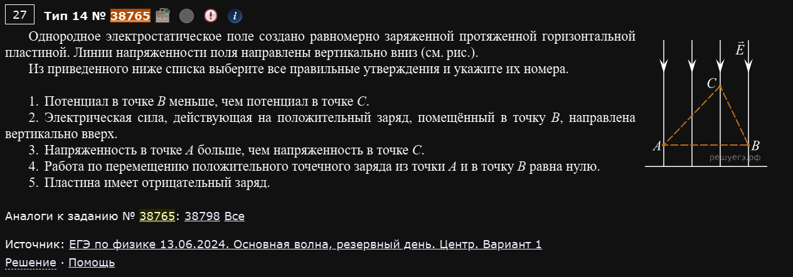
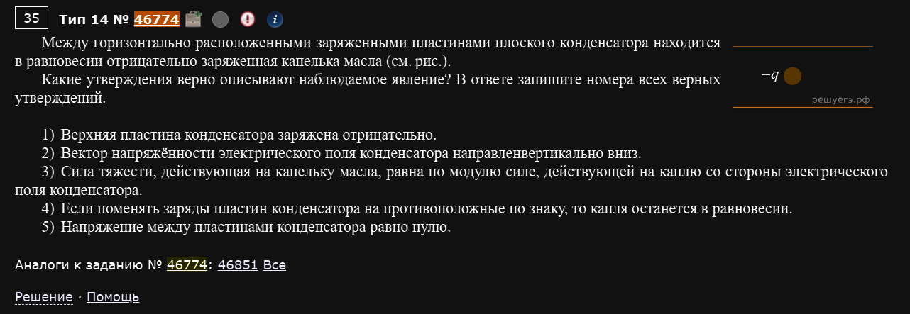
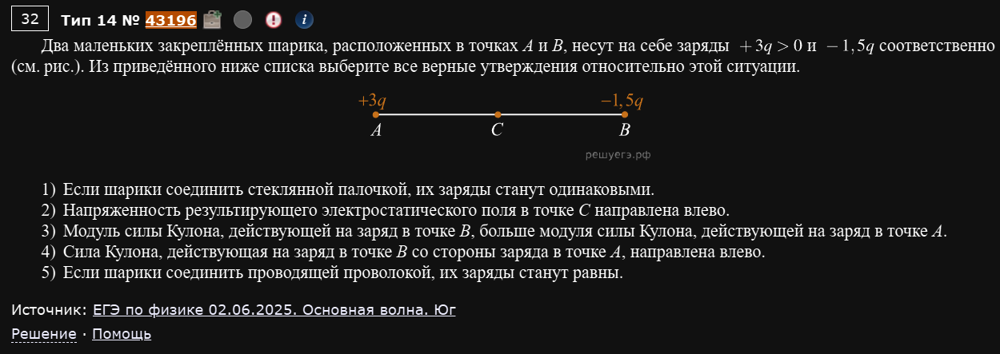
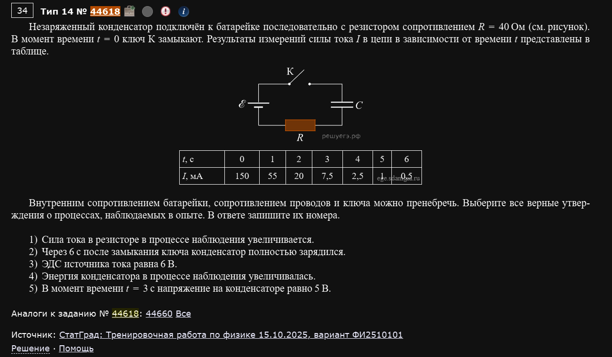
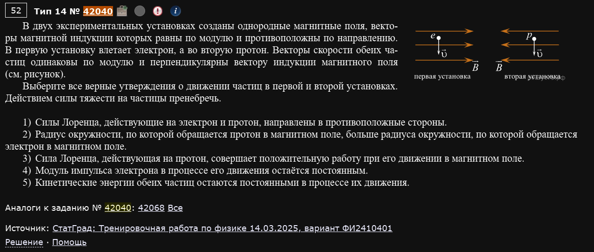
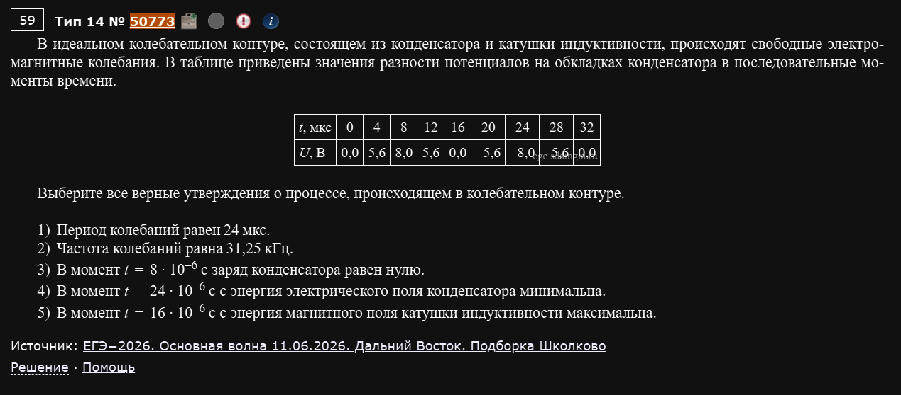
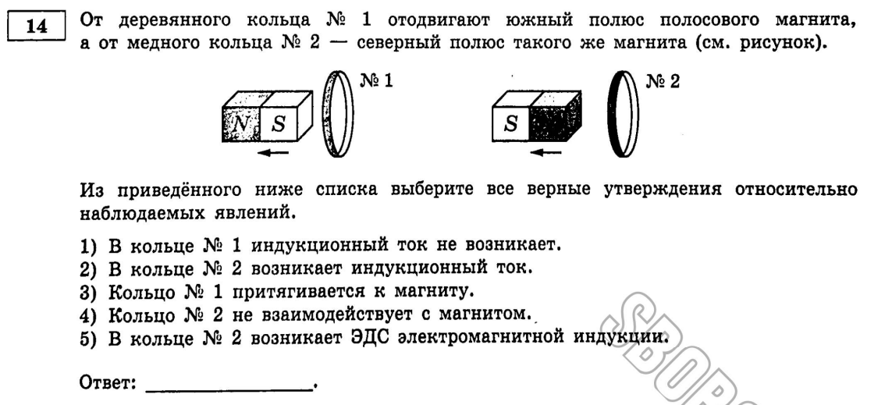

Разнообразие
Поскольку завершающие задания невероятно разнообразные по ситуациям и темам, которые в них задействованы - здесь разбираются только те задачи, благодаря которым у вас сформируется понимание про что вообще этот номер.
№14. Электродинамика. Анализ физических процессов
Тот же формат, что и в номерах 5 и 9: выберите все верные утверждения (обычно 2-3 из 5) из списка. Материал теперь — электродинамика: электростатика и цепи постоянного тока, магнетизм и электромагнитная индукция, немного оптики. Как и раньше, почти всегда даётся рисунок, график или таблица — и первым делом нужно понять, что именно на них показано, а уже потом разбирать по одному каждое утверждение.
Электричество
Пример 1) (Решу ЕГЭ №38765 — ЕГЭ по физике 13.06.2024, основная волна, резервный день, Центр, вариант 1)

Однородное электростатическое поле создано равномерно заряженной протяжённой горизонтальной пластиной. Линии напряжённости поля направлены вертикально вниз (см. рис.). Из приведённого ниже списка выберите все правильные утверждения и укажите их номера.
- Потенциал в точке B меньше, чем потенциал в точке C.
- Электрическая сила, действующая на положительный заряд, помещённый в точку B, направлена вертикально вверх.
- Напряжённость в точке A больше, чем напряжённость в точке C.
- Работа по перемещению положительного точечного заряда из точки A в точку B равна нулю.
- Пластина имеет отрицательный заряд.
На рисунке пластина расположена сверху (за пределами рисунка), стрелки поля выходят из неё и идут вниз. Точка C находится выше точек A и B (которые лежат на одной горизонтали, ближе к пластине не показаны, но дальше друг от друга по горизонтали).
Ключевой факт: поле от бесконечной равномерно заряженной пластины однородно — то есть одинаково по модулю и направлению в любой точке пространства, независимо от расстояния до пластины.
1. Поле направлено вниз, значит потенциал убывает по направлению поля, то есть вниз. C выше — значит, потенциал в C больше, чем на уровне A и B. Раз B ниже C — потенциал в B действительно меньше, чем в C. Верно.
2. Сила на положительный заряд всегда направлена вдоль поля, то есть вниз, а не вверх. Неверно.
3. Поле однородно — напряжённость одинакова везде, в том числе в A и в C. Утверждение “больше” здесь в принципе неверно. Неверно.
4. A и B находятся на одной высоте (на одной горизонтали) — значит, на одном и том же потенциале. Работа поля при перемещении заряда между двумя точками одного потенциала всегда равна нулю (ведь , а ). Верно.
5. Линии поля входят в пластину => пластина имеет отрицательный заряд. Верно.
Ответ: 145.
Расстояние до бесконечной пластины не имеет значения
Это самая частая ловушка темы: у точечного заряда поле убывает с расстоянием, а у безграничной равномерно заряженной пластины — нет, оно всюду одинаково. Как только видите “протяжённая пластина” или “бесконечная плоскость” — сразу вычёркивайте любое утверждение вида “напряжённость в дальней точке меньше”.
Пример 2) (Решу ЕГЭ №46774 — аналоги №46851)

Между горизонтально расположенными заряженными пластинами плоского конденсатора находится в равновесии отрицательно заряженная капелька масла (см. рис.). Какие утверждения верно описывают наблюдаемое явление? В ответе запишите номера всех верных утверждений.
- Верхняя пластина конденсатора заряжена отрицательно.
- Вектор напряжённости электрического поля конденсатора направлен вертикально вниз.
- Сила тяжести, действующая на капельку масла, равна по модулю силе, действующей на каплю со стороны электрического поля конденсатора.
- Если поменять заряды пластин конденсатора на противоположные по знаку, то капля останется в равновесии.
- Напряжение между пластинами конденсатора равно нулю.
Капля висит неподвижно между пластинами — значит, сила тяжести (вниз) и электрическая сила (обязательно вверх, чтобы скомпенсировать) уравновешивают друг друга.
3. Это и есть условие равновесия: . Верно.
2. Электрическая сила на отрицательный заряд направлена против поля. Раз сила должна быть направлена вверх (чтобы уравновесить тяжесть), поле сáмо направлено вниз. Верно.
1. Поле между пластинами конденсатора всегда направлено от плюса к минусу. Если поле направлено вниз, значит верхняя пластина — плюс, а не минус. Неверно.
4. Если поменять заряды пластин местами, поле развернётся на 180° (станет направлено вверх). Тогда сила на отрицательный заряд будет направлена вниз — в ту же сторону, что и тяжесть. Равновесие немедленно нарушится, капля начнёт падать с удвоенным ускорением. Неверно.
5. Если бы напряжения не было, не было бы и поля, и капля просто упала бы под действием одной силы тяжести. Раз она висит — поле (и напряжение) точно есть. Неверно.
Ответ: 23.
С какого конца начинать такие задачи
В задачах “тело висит в поле” начинайте всегда с условия равновесия (сумма сил = 0) — оно сразу говорит вам направление электрической силы, а значит (через знак заряда) и направление поля, а через направление поля — и знак каждой пластины. Дальше все остальные утверждения проверяются по цепочке от этого одного факта.
Пример 3) (Решу ЕГЭ №43196 — ЕГЭ по физике 02.06.2025, основная волна, Юг)

Два маленьких закреплённых шарика, расположенных в точках A и B, несут на себе заряды +3q > 0 и −1,5q соответственно (см. рис.). Из приведённого ниже списка выберите все верные утверждения относительно этой ситуации.
- Если шарики соединить стеклянной палочкой, их заряды станут одинаковыми.
- Напряжённость результирующего электростатического поля в точке C направлена влево.
- Модуль силы Кулона, действующей на заряд в точке B, больше модуля силы Кулона, действующей на заряд в точке A.
- Сила Кулона, действующая на заряд в точке B со стороны заряда в точке A, направлена влево.
- Если шарики соединить проводящей проволокой, их заряды станут равны.
A (заряд +3q) слева, B (заряд −1,5q) справа, C — посередине между ними.
1. Стеклянная палочка — диэлектрик, заряд по ней не течёт. Заряды шариков не изменятся вообще, а уж тем более не станут одинаковыми. Неверно.
5. Проводящая проволока, наоборот, позволяет заряду перетекать, пока потенциалы (а для одинаковых шариков — и заряды) не выровняются. Суммарный заряд сохраняется: , он поровну разделится между двумя (одинаковыми) шариками — по на каждый. Заряды действительно станут равны между собой (хоть и не равны первоначальным). Верно.
3. По третьему закону Ньютона (здесь — в кулоновской форме) сила, с которой A действует на B, всегда по модулю равна силе, с которой B действует на A — это следует прямо из формулы Кулона, не зависит от того, что заряды разные по величине. Неверно.
4. Заряды разноимённые (+3q и −1,5q) — значит, шарики притягиваются. Сила на B со стороны A направлена к A, то есть влево (так как A левее B). Верно.
2. Поле от +3q в точке C направлено от A, то есть вправо (прочь от положительного заряда). Поле от −1,5q в точке C направлено к B, то есть тоже вправо (к отрицательному заряду). Оба вклада складываются вправо, а не влево. Неверно.
Ответ: 45.
Сила Кулона между двумя телами — всегда пара равных сил
Утверждение вида “сила на один из зарядов больше силы на другой” в паре взаимодействующих зарядов всегда неверно, независимо от того, насколько разные у них заряды — это прямое следствие третьего закона Ньютона, а не что-то, что нужно вычислять по формуле Кулона.
Пример 4) (Решу ЕГЭ №44618 — СтатГрад: тренировочная работа по физике 15.10.2025, вариант ФИ2510101)

Незаряженный конденсатор подключён к батарейке последовательно с резистором сопротивлением R = 40 Ом. В момент времени t = 0 ключ К замыкают. Результаты измерений силы тока I в цепи в зависимости от времени t представлены в таблице.
| t, с | 0 | 1 | 2 | 3 | 4 | 5 | 6 |
|---|---|---|---|---|---|---|---|
| I, мА | 150 | 55 | 20 | 7,5 | 2,5 | 1 | 0,5 |
Внутренним сопротивлением батарейки, сопротивлением проводов и ключа можно пренебречь. Выберите все верные утверждения о процессах, наблюдаемых в опыте.
- Сила тока в резисторе в процессе наблюдения увеличивается.
- Через 6 с после замыкания ключа конденсатор полностью зарядился.
- ЭДС источника тока равна 6 В.
- Энергия конденсатора в процессе наблюдения увеличивалась.
- В момент времени t = 3 с напряжение на конденсаторе равно 5 В.
Классическая зарядка конденсатора через резистор: в момент t=0 конденсатор ещё “пуст” и ведёт себя как перемычка, весь ток идёт через резистор и всё напряжение батарейки падает на нём. По мере зарядки конденсатора ток уменьшается, стремясь к нулю.
1. По таблице ток монотонно убывает (150→55→20→…→0,5 мА), а не растёт. Неверно.
3. В момент t=0 напряжение на конденсаторе ещё равно нулю, значит всё ЭДС батарейки падает на резисторе: В. Верно.
2. При t=6с ток всё ещё не равен нулю (0,5 мА) — значит, зарядка ещё не завершена полностью, хоть и почти закончена. Неверно.
4. Пока конденсатор заряжается, напряжение на нём растёт от 0 к максимуму — а с ним растёт и энергия . Верно.
5. По второму правилу Кирхгофа , откуда при t=3с: В — а не 5 В, как утверждается. Неверно.
Ответ: 34.
Таблица — это тоже график, просто в цифрах
Не пугайтесь таблиц вместо привычных графиков: подход тот же — ищите закономерность (тут: ток монотонно падает к нулю — классическая зарядка через RC), а конкретные числа из таблицы подставляйте прямо в формулы (закон Ома, закон Кирхгофа), как если бы это был обычный расчёт.
Магнетизм и электромагнетизм
Пример 1) (Решу ЕГЭ №42040 — СтатГрад: тренировочная работа по физике 14.03.2025, вариант ФИ2410401)

В двух экспериментальных установках созданы однородные магнитные поля, векторы магнитной индукции которых равны по модулю и противоположны по направлению. В первую установку влетает электрон, а во вторую протон. Векторы скорости обеих частиц одинаковы по модулю и перпендикулярны вектору индукции магнитного поля (см. рисунок). Выберите все верные утверждения о движении частиц в первой и второй установках. Действием силы тяжести на частицы пренебречь.
- Силы Лоренца, действующие на электрон и протон, направлены в противоположные стороны.
- Радиус окружности, по которой обращается протон в магнитном поле, больше радиуса окружности, по которой обращается электрон в магнитном поле.
- Сила Лоренца, действующая на протон, совершает положительную работу при его движении в магнитном поле.
- Модуль импульса электрона в процессе его движения остаётся постоянным.
- Кинетические энергии обеих частиц остаются постоянными в процессе их движения.
По рисунку: в первой установке электрон летит вниз, поле направлено вправо; во второй протон тоже летит вниз, а поле направлено влево (то есть действительно противоположно первому).
1. Считаем через правило левой руки (или векторное произведение ) для обеих установок: для электрона (заряд отрицательный, поле вправо) и для протона (заряд положительный, поле влево, то есть тоже “перевёрнуто”) — оба фактора (знак заряда и направление поля) меняются одновременно, поэтому итоговое направление силы получается одинаковым для обеих частиц, а не противоположным. Неверно.
2. Радиус вращения в магнитном поле: . Модули скорости, заряда и индукции одинаковы для обеих частиц — различается только масса, а масса протона примерно в 1836 раз больше массы электрона. Значит, и радиус у протона в те же ~1836 раз больше. Верно.
3. Сила Лоренца всегда перпендикулярна скорости частицы (это прямо следует из формулы через векторное произведение), а значит работы не совершает — ни положительной, ни отрицательной, она попросту равна нулю в любой момент. Неверно.
4. Раз сила Лоренца работы не совершает, кинетическая энергия частицы не меняется, а значит не меняется и модуль её скорости — а с ним и модуль импульса . Верно.
5. То же самое рассуждение, что и в пункте 4, только явно про энергию: раз работа силы равна нулю, кинетическая энергия обеих частиц (и электрона, и протона) остаётся постоянной. Верно.
Ответ: 245.
Магнитная сила — единственная, которая никогда не работает
Это стоит запомнить как отдельный факт: сила Лоренца (и, как следствие, сила Ампера) всегда перпендикулярна скорости заряда/направлению тока, поэтому не может ни разгонять, ни тормозить частицу — только менять направление её движения. Любое утверждение о том, что магнитное поле “совершает положительную/отрицательную работу” или “меняет модуль скорости/импульса/кинетическую энергию” — неверно по определению, можно даже не считать.
Пример 2) (Решу ЕГЭ №50773 — ЕГЭ-2026, основная волна 11.06.2026, Дальний Восток, подборка Школково)

В идеальном колебательном контуре, состоящем из конденсатора и катушки индуктивности, происходят свободные электромагнитные колебания. В таблице приведены значения разности потенциалов на обкладках конденсатора в последовательные моменты времени.
| t, мкс | 0 | 4 | 8 | 12 | 16 | 20 | 24 | 28 | 32 |
|---|---|---|---|---|---|---|---|---|---|
| U, В | 0,0 | 5,6 | 8,0 | 5,6 | 0,0 | −5,6 | −8,0 | −5,6 | 0,0 |
Выберите все верные утверждения о процессе, происходящем в колебательном контуре.
- Период колебаний равен 24 мкс.
- Частота колебаний равна 31,25 кГц.
- В момент t = 8·10⁻⁶ с заряд конденсатора равен нулю.
- В момент t = 24·10⁻⁶ с энергия электрического поля конденсатора минимальна.
- В момент t = 16·10⁻⁶ с энергия магнитного поля катушки индуктивности максимальна.
По таблице видно: напряжение стартует с нуля, доходит до максимума +8В на t=8, возвращается к нулю на t=16, доходит до минимума −8В на t=24, и снова к нулю на t=32 — это ровно один полный период гармонических колебаний.
1. Полный цикл (0 → max → 0 → min → 0) занимает время от t=0 до t=32мкс — значит, T=32мкс, а не 24. Неверно.
2. Гц кГц. Верно.
3. В момент t=8мкс напряжение (а значит, и заряд ) как раз достигает максимума (+8В), а вовсе не нуля. Неверно.
4. В момент t=24мкс напряжение равно −8В — это тоже экстремум (по модулю максимальное значение за весь период), значит энергия электрического поля здесь максимальна, а не минимальна. Неверно.
5. В момент t=16мкс напряжение (и заряд конденсатора) равны нулю — значит, вся энергия контура в этот момент сосредоточена в катушке, то есть энергия магнитного поля здесь действительно максимальна. Верно.
Ответ: 25.
Экстремум напряжения — это минимум энергии катушки, а не максимум
Легко перепутать местами моменты максимума и минимума. Опорное правило: когда |U| (и заряд) максимальны — ток равен нулю, и вся энергия в конденсаторе (энергия катушки минимальна). Когда U=0 — ток максимален, и вся энергия в катушке (энергия конденсатора минимальна). Это ровно то же самое чередование, что и в примере из номера 13 про минимумы/максимумы энергии контура.
Пример 3) (Демидова 2026, вариант 29)

От деревянного кольца №1 отодвигают южный полюс полосового магнита, а от медного кольца №2 — северный полюс такого же магнита. Из приведённого ниже списка выберите все верные утверждения относительно наблюдаемых явлений.
- В кольце №1 индукционный ток не возникает.
- В кольце №2 возникает индукционный ток.
- Кольцо №1 притягивается к магниту.
- Кольцо №2 не взаимодействует с магнитом.
- В кольце №2 возникает ЭДС электромагнитной индукции.
Ключевая деталь, которую легко упустить: кольцо №1 сделано из дерева — то есть это диэлектрик, в нём попросту нет свободных электронов, способных образовать ток. Кольцо №2 — медное, то есть проводник.
1. У дерева нет свободных зарядов — какой бы ни была меняющаяся ЭДС “в принципе”, реального тока в деревянном кольце возникнуть не может. Верно.
2, 5. В медном (проводящем) кольце меняющийся магнитный поток от удаляющегося магнита действительно наводит ЭДС индукции — а раз кольцо ещё и проводящее, по нему потечёт реальный индукционный ток. Оба утверждения верны.
3. Раз в деревянном кольце тока нет, у него нет и собственного магнитного поля — значит, ему попросту нечем взаимодействовать с магнитом (ни притягиваться, ни отталкиваться). Неверно.
4. А вот у медного кольца ток есть, значит есть и собственное магнитное поле, которое (по правилу Ленца) взаимодействует с полем магнита — кольцо №2 как раз будет взаимодействовать с магнитом (по правилу Ленца — притягиваться к удаляющемуся магниту, препятствуя уменьшению потока). Неверно.
Ответ: 125.
Материал кольца — это не декорация
Если в условии прямо назван материал кольца/рамки/провода — это не случайная деталь для красоты, а часть физики задачи. Диэлектрик (дерево, стекло, пластик) в таких задачах всегда означает “тока нет и быть не может”, даже если магнитный поток через него меняется — а без тока нет и никакого механического взаимодействия с магнитом.
Оптика
Ни одного реального задания не нашлось
В этой подтеме на Решу ЕГЭ 13 задач в категории — но ни одна не подписана как задание из реальной волны ЕГЭ или Статграда 2019 года и позднее (только старые демоверсии 2016-2017 годов). В Демидовой 2026 (все 30 вариантов) оптика тоже ни разу не встретилась в позиции №14 — только электричество и магнетизм. Похоже, качественные задачи по оптике в номере 14 в последних циклах ЕГЭ практически не используются на практике. Основные идеи темы (на всякий случай, без привязки к конкретному заданию): при переходе в оптически более плотную среду луч приближается к нормали и угол преломления меньше угла падения; полное внутреннее отражение возможно только при переходе из более плотной среды в менее плотную, и только при углах больше предельного; для линзы — действительное изображение получается, только если предмет находится дальше фокуса, а тип линзы (собирающая/рассеивающая) определяется соотношением показателей преломления линзы и окружающей среды.